東京大学 2003年 理科 第5問
問題
さいころをn回振り、第1回目から第n回目までに出たさいころの目の数n個の積を とする。
とする。
(1)  が5で割り切れる確率を求めよ。
が5で割り切れる確率を求めよ。
(2)  が4で割り切れる確率を求めよ。
が4で割り切れる確率を求めよ。
(3)  が20で割り切れる確率を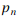とおく。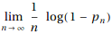を求めよ。
が20で割り切れる確率を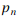とおく。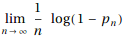を求めよ。
注意：さいころは1から6までの目が等確率で出るものとする。
解答
(1)
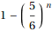が5で割り切れる確率を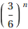とする。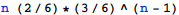が5で割り切れるのは、
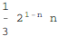が5で割り切れないとき、n+1回目のサイコロで5の目を出す
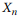が5で割り切れるとき
となる場合だから、漸化式を立ててRSolveで解く。
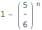
(2)
 が2で割り切れて4で割り切れない確率を
が2で割り切れて4で割り切れない確率を 、
、 が4で割り切れる確率を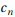とおく。
が4で割り切れる確率を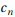とおく。 が4で割り切れるのは
が4で割り切れるのは
 が2で割り切れないとき、n+1回目のサイコロで4の目を出す
が2で割り切れないとき、n+1回目のサイコロで4の目を出す
 が2で割り切れて4で割り切れないとき、n+1回目のサイコロで2,4,6のいずれかの目を出す
が2で割り切れて4で割り切れないとき、n+1回目のサイコロで2,4,6のいずれかの目を出す
 が4で割り切れるとき
が4で割り切れるとき
となる場合だから、漸化式を立ててRSolveで解く。
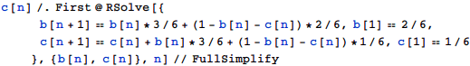
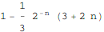
(3)
2で割り切れて4でも5でも割り切れない確率を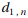、
4で割り切れて5で割り切れない確率を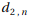、
5で割り切れて10で割り切れない確率を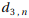、
10で割り切れて20で割り切れない確を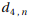とする。
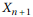が2で割り切れて4でも5でも割り切れない場合は
 が2でも5でも割り切れない(すなわちn回すべて1,3を出す)、かつn+1回目に2,6の目を出す
が2でも5でも割り切れない(すなわちn回すべて1,3を出す)、かつn+1回目に2,6の目を出す
 が2で割り切れるが4でも5でも割り切れない、かつn+1回目に1,3の目を出す
が2で割り切れるが4でも5でも割り切れない、かつn+1回目に1,3の目を出す
 が4で割り切れて5で割り切れない場合は
が4で割り切れて5で割り切れない場合は
 が2でも5でも割り切れない(すなわちn回すべて1,3を出す)、かつn+1回目に4の目を出す
が2でも5でも割り切れない(すなわちn回すべて1,3を出す)、かつn+1回目に4の目を出す
 が2で割り切れて4でも5でも割り切れない、かつn+1回目に2,4,6の目を出す
が2で割り切れて4でも5でも割り切れない、かつn+1回目に2,4,6の目を出す
 が4で割り切れて5で割り切れない、かつn+1回目に5以外の目を出す
が4で割り切れて5で割り切れない、かつn+1回目に5以外の目を出す
 が5で割り切れて10で割り切れない場合は
が5で割り切れて10で割り切れない場合は
 が2でも5でも割り切れない(すなわちn回すべて1,3を出す)、かつn+1回目に5の目を出す
が2でも5でも割り切れない(すなわちn回すべて1,3を出す)、かつn+1回目に5の目を出す
 が5で割り切れて10で割り切れない、かつn+1回目に1,3,5の目を出す
が5で割り切れて10で割り切れない、かつn+1回目に1,3,5の目を出す
 が10で割り切れて20で割り切れない場合は
が10で割り切れて20で割り切れない場合は
 が2で割り切れて4でも5でも割り切れない、かつn+1回目に5の目を出す
が2で割り切れて4でも5でも割り切れない、かつn+1回目に5の目を出す
 が5で割り切れて10で割り切れない、かつn+1回目に2,6の目を出す
が5で割り切れて10で割り切れない、かつn+1回目に2,6の目を出す
 が10で割り切れて20で割り切れない、かつn+1回目に1,3,5の目を出す
が10で割り切れて20で割り切れない、かつn+1回目に1,3,5の目を出す
 が20で割り切れる場合は
が20で割り切れる場合は
 が4で割り切れて5で割り切れない、かつn+1回目に5の目を出す
が4で割り切れて5で割り切れない、かつn+1回目に5の目を出す
 が5で割り切れて10で割り切れない、かつn+1回目に4の目を出す
が5で割り切れて10で割り切れない、かつn+1回目に4の目を出す
 が10で割り切れて20で割り切れない、かつn+1回目に2,4,6の目を出す
が10で割り切れて20で割り切れない、かつn+1回目に2,4,6の目を出す
が20で割り切れる
であるから、漸化式をRSolveで解いて
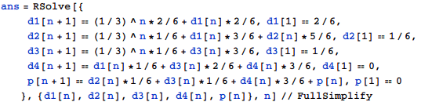
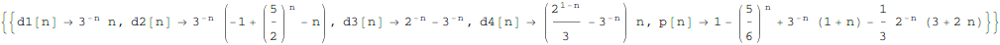
従って求める極限値は

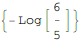
これは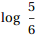と等しい。